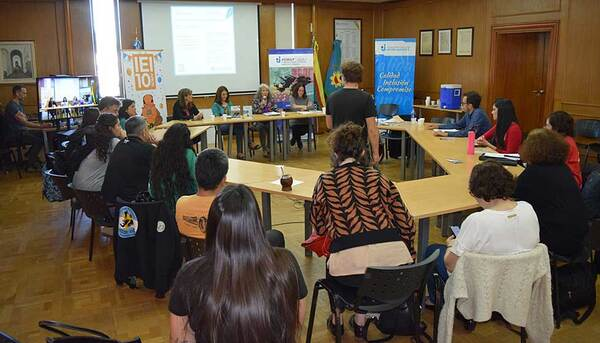

Inicio
Institucional
Carreras
Posgrado
Novedades
Institucionales
Abrió la inscripción a las becas para estudiantes de la UNRdlP
Pre-Encuentro hacia el IX Foro Nacional de Salud
Acto de colación: 56 nuevos egresados de la UNRdlP

Exitosas jornadas de investigación en la UNRdLP
Accesos UNRdlP
SIU Guaraní
Campus Virtual
Biblioteca
Calendario Académico
Convocatorias Abiertas
Medios
Editorial
Agencia
Comunidad UNRdlP
Twitter @UNRdlP Oficial
Facebook UNRdlP Oficial
Instagram UNRdlP
Destacados
Red Universitaria para el cuidado de la casa común
Portal de Empleos
Estudios en neurociencias y sistemas complejos
Colaboratorio Universitario del sur